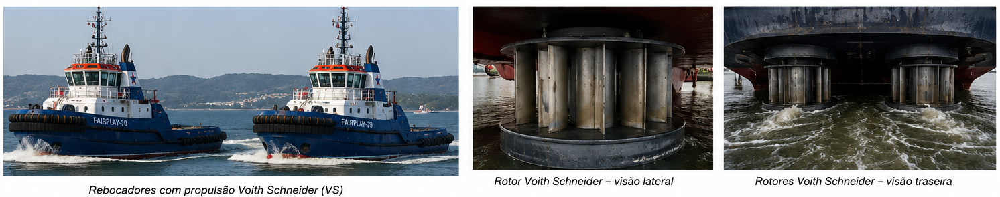
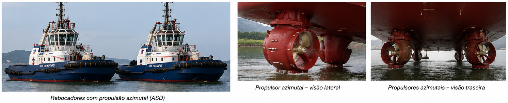

🚢 Rebocadores
Tugs and Tug Assistance
Estudo da atuação dos rebocadores na manobra do navio, com ênfase nas forças aplicadas, pontos de atuação, momentos de guinada, métodos de assistência e efeitos sobre o movimento do navio.
📊 Progresso da Aula
0% da aula concluída
📘 Identificação da aula
Disciplina: Manobrabilidade
Assunto: Rebocadores
Termo técnico principal: Tugs and Tug Assistance
Nível: PSCPP
⏱ Cronômetro de Estudo
📖 Estudo
Estude com concentração durante o ciclo e utilize a pausa para descansar antes de iniciar uma nova sessão.
📋 Conteúdo programático
II — ARTE NAVAL — Utilização de rebocadores portuários
- 26.1. Fatores de projeto de rebocadores portuários
- 26.2. Tipos de rebocadores portuários
- 26.3. Métodos de assistência
- 26.4. Capacidades e limitações dos rebocadores
- 26.4.1. Limites ambientais para operações com rebocadores
- 26.5. Tonelagem de Tração Estática Necessária — Bollard Pull — BP
- 26.6. Efeitos de interação na segurança e no desempenho do rebocador
- 26.7. Segurança do Rebocador
- 26.8. Operação com cabos de reboque
- 26.9. Rebocadores Escort
- 31. Métodos de utilização de rebocadores empregados no Brasil
- 32. Princípios básicos de estabilidade
🎯 Objetivos de aprendizagem
Ao concluir esta aula, o aluno deverá ser capaz de:
- identificar os fatores que determinam o projeto, a seleção e o emprego de rebocadores portuários;
- distinguir os principais tipos de rebocadores, suas configurações de propulsão e suas características operacionais;
- compreender os diferentes métodos de assistência e sua relação com o tipo de rebocador empregado;
- avaliar capacidades e limitações dos rebocadores durante uma manobra;
- interpretar a influência das condições ambientais sobre a eficiência e a segurança da assistência;
- compreender o conceito e a aplicação operacional do bollard pull;
- reconhecer os efeitos de interação entre o navio assistido e o rebocador;
- identificar riscos próprios das operações com rebocadores e os princípios de segurança associados;
- compreender os princípios da operação com cabos de reboque;
- compreender os fundamentos das operações com escort tugs;
- reconhecer os métodos de utilização de rebocadores empregados no Brasil;
- compreender os princípios básicos de estabilidade aplicáveis aos rebocadores;
- interpretar terminologia e trechos técnicos em inglês utilizados nas publicações oficiais da bibliografia.
📚 Publicações utilizadas
Tug Use in Port — A Practical Guide
Henk Hensen — Fourth Revised Edition, 2021.
É a principal referência internacional utilizada para o desenvolvimento desta aula.
Trechos utilizados: Chapters 1 a 7 e Chapter 9, conforme estabelecido na Bibliografia oficial do PSCPP.
Nesta Parte 1, a referência principal é: Chapter 1 — Tug Design Factors, especialmente as Sections 1.1 a 1.5.
Rebocadores Portuários
Otávio Fragoso e Marcelo Cajaty — 2002.
Referência brasileira utilizada para complementar o estudo dos rebocadores portuários e, especialmente, para relacionar os conceitos internacionais à terminologia e às práticas encontradas no Brasil.
Trechos utilizados: partes da obra diretamente relacionadas aos tópicos do conteúdo programático.
Utilização de Rebocadores nos Portos
Publicação em língua portuguesa baseada na obra de Henk Hensen, empregada como apoio à terminologia técnica e à compreensão dos conceitos de utilização de rebocadores.
Trechos utilizados nesta Parte 1: Capítulo 1 — Fatores de projeto do rebocador.
Estabilidade dos Rebocadores — Um Guia Prático para Operações Seguras
Henk Hensen e Markus van der Laan — 2022.
Será utilizada especificamente na parte da aula destinada aos princípios de estabilidade.
Trecho utilizado: Capítulo 2 — Princípios básicos de estabilidade, conforme a Bibliografia oficial.
🗂 Organização da aula
- Parte 1 — Fatores de projeto dos rebocadores portuários
- Parte 2 — Tipos de rebocadores portuários
- Parte 3 — Métodos de assistência
- Parte 4 — Capacidades e limitações dos rebocadores
- Parte 5 — Limites ambientais das operações
- Parte 6 — Bollard Pull e força requerida
- Parte 7 — Interação navio–rebocador
- Parte 8 — Segurança nas operações com rebocadores
- Parte 9 — Operação com cabos de reboque
- Parte 10 — Escort Tugs
- Parte 11 — Métodos de utilização empregados no Brasil
- Parte 12 — Princípios básicos de estabilidade dos rebocadores
PARTE 1 — FATORES DE PROJETO DOS REBOCADORES PORTUÁRIOS
O estudo dos rebocadores portuários não começa pela comparação entre ASD, tratores, rebocadores convencionais ou outros arranjos.
Antes disso, é necessário compreender por que existem diferentes tipos de rebocadores e quais condições determinam as características necessárias para uma determinada operação.
Hensen inicia sua análise demonstrando que os métodos de assistência encontrados nos portos variam em função das condições locais, das situações específicas e, frequentemente, de costumes e práticas desenvolvidos ao longo do tempo.
Essas diferenças operacionais refletem-se diretamente nos requisitos impostos aos rebocadores e ajudam a explicar o desenvolvimento de diferentes tipos e configurações.
1. Fatores de projeto dos rebocadores portuários
Os rebocadores portuários evoluíram de forma significativa. Hensen destaca o desenvolvimento de unidades com elevada manobrabilidade, maior potência instalada, modernos sistemas de governo, novos equipamentos de reboque e novos materiais empregados nos cabos.
Esses desenvolvimentos não afetam apenas o projeto do rebocador.
Eles também influenciam:
- os métodos de assistência disponíveis;
- a forma como a força do rebocador pode ser aplicada;
- a quantidade de rebocadores utilizada na assistência;
- as possibilidades operacionais em diferentes condições de porto e de acesso.
Ao mesmo tempo, muitos navios modernos apresentam melhores recursos próprios de manobra, enquanto os rebocadores modernos oferecem melhor desempenho de reboque.
A combinação desses fatores pode permitir, em determinadas operações, a utilização de um número menor de rebocadores.
Entretanto, Hensen chama atenção para uma consequência operacional importante: quanto menor o número de rebocadores empregados, mais crítica se torna a função de cada unidade individual.
Conceito fundamental
A redução da quantidade de rebocadores utilizados em uma manobra aumenta a importância da segurança operacional, da confiabilidade e da adequação de cada rebocador à tarefa.
Portanto, a análise não pode ser limitada à quantidade de rebocadores.
É necessário avaliar se cada unidade possui as características necessárias para executar com segurança a função que lhe será atribuída.
🌐 Termos técnicos
- Harbour tug — rebocador portuário;
- Tug design factors — fatores que influenciam o projeto e a seleção do rebocador;
- Tug assistance — assistência prestada por rebocadores;
- Assisting method — método de assistência;
- Towing performance — desempenho do rebocador durante o reboque ou assistência;
- Operational safety — segurança operacional;
- Reliability — confiabilidade;
- Suitability — adequação da unidade à tarefa ou operação prevista;
- Towing appliances — equipamentos ou dispositivos utilizados para reboque;
- Towline — cabo de reboque.
⚠ Atenção PSCPP
Não associe automaticamente menor número de rebocadores a menor segurança ou a menor capacidade de assistência.
A análise depende das características dos rebocadores, do navio assistido, do método de assistência e das condições da operação.
Por outro lado, quando poucos rebocadores são empregados, uma falha ou inadequação de uma única unidade passa a ter importância proporcionalmente maior para a manobra.
⚓ Fatores que determinam os requisitos do rebocador
Leitura da figura: Hensen trata a escolha do rebocador como resultado de um conjunto de condições operacionais. Porto, ambiente, navio, serviço e método de assistência estabelecem os requisitos que deverão ser atendidos pelo rebocador.
2. O porto e suas vias de acesso
Entre os primeiros fatores que devem ser avaliados estão o tipo de porto, suas vias de acesso, possíveis desenvolvimentos futuros e as condições geográficas e ambientais existentes.
Hensen divide os portos, de maneira geral, em quatro categorias:
- conventional ports — portos convencionais;
- portos constituídos predominantemente por terminais;
- portos constituídos predominantemente por piers e jetties;
- instalações de amarração localizadas em áreas remotas ou offshore.
Essa classificação é operacionalmente importante porque a configuração física do porto interfere diretamente na forma como o rebocador poderá trabalhar.
Portos convencionais
Nos portos convencionais podem existir bacias portuárias, docas, berços fluviais, pontes e eclusas.
Alguns possuem ligação curta e relativamente simples com o mar aberto, enquanto outros apresentam longos trechos de rios ou canais entre a entrada do porto e os locais de atracação.
Nessas situações, o rebocador pode precisar ser adequado não apenas à assistência junto ao cais, mas também à operação:
- em rios;
- em canais;
- durante a passagem de pontes;
- durante a entrada e saída de eclusas;
- em áreas mais expostas próximas ao mar.
Hensen observa ainda que o desenvolvimento físico de portos tradicionais nem sempre acompanha o aumento das dimensões dos navios que os frequentam.
O resultado pode ser o aumento da complexidade das manobras de entrada e saída e, consequentemente, novas exigências relativas à potência, manobrabilidade e dimensões dos rebocadores.
Portos predominantemente constituídos por terminais
Quando existe grande área disponível para manobra junto aos terminais, as operações podem apresentar maior possibilidade de padronização.
Hensen destaca nesse contexto a utilização do método push-pull, no qual o rebocador trabalha junto ao costado e pode alternar entre empurrar e puxar o navio assistido.
Piers e jetties
Em determinadas instalações desse tipo, a geometria permite que rebocadores operem dos dois bordos do navio assistido.
Isso contrasta com muitas atracações convencionais junto a um cais, nas quais o próprio cais restringe a atuação de rebocadores em um dos bordos.
Instalações offshore ou remotas
A assistência em instalações offshore pode ocorrer em condições de vento e ondas mais severas.
Hensen relaciona essas operações a requisitos específicos, que podem envolver:
- boa estabilidade;
- defensas adequadas;
- elevada potência;
- equipamentos de reboque apropriados à operação.
⚓ Diferentes ambientes de operação do rebocador
Interpretação operacional: a geometria da área modifica as posições disponíveis para o rebocador, o espaço de manobra, a exposição às condições ambientais e, consequentemente, as características necessárias para executar a assistência.
Conceito fundamental
A configuração física do porto não determina apenas quanto esforço será necessário.
Ela também determina onde, como e em quais condições o rebocador deverá ser capaz de produzir esse esforço.
🌐 Termos técnicos
- Port approach — via de acesso ou aproximação ao porto;
- Conventional port — porto convencional;
- Harbour basin — bacia portuária;
- Dock — doca;
- Jetty — estrutura de atracação projetada para fora da margem;
- Pier — píer;
- Lock — eclusa;
- Push-pull method — método de assistência no qual o rebocador atua junto ao costado empurrando ou puxando o navio;
- Offshore location — instalação ou local de operação afastado da costa.
⚠ Atenção PSCPP
Um rebocador adequado para assistência exclusivamente dentro de uma bacia protegida não é necessariamente adequado para trabalhar em uma longa aproximação exposta a mar e ondulação.
Da mesma forma, grande potência instalada não resolve uma incompatibilidade de dimensões, calado, manobrabilidade ou configuração operacional.
3. Condições ambientais
As condições ambientais exercem influência direta sobre a escolha e o desempenho dos rebocadores.
Hensen destaca que muitos portos tradicionais estão localizados em estuários e podem sofrer forte influência de marés, correntes e variações sazonais.
Ao longo de uma mesma derrota entre a entrada do porto e o berço podem existir diferenças importantes de:
- profundidade;
- corrente;
- espaço disponível;
- exposição ao vento;
- exposição a ondas e swell;
- necessidade de passagem por pontes;
- necessidade de passagem por eclusas.
Consequentemente, as exigências impostas ao rebocador podem se modificar ao longo da própria manobra.
Hensen observa que, em determinados portos, esse problema é solucionado inclusive pela utilização de diferentes tipos de rebocadores em diferentes trechos da rota.
Em áreas próximas ao mar e em instalações offshore, ondas e swell podem impor requisitos adicionais.
Em regiões frias, a presença de gelo também pode condicionar o projeto e a operação do rebocador.
Quando a profundidade disponível é limitada, o próprio calado do rebocador torna-se uma característica crítica.
Conceito fundamental
O rebocador deve permanecer capaz de atuar efetivamente nas condições ambientais previstas para sua área de operação, respeitando os limites de segurança.
A avaliação deve considerar não apenas a condição junto ao berço, mas também os acessos e demais áreas nas quais sua assistência poderá ser necessária.
🌐 Termos técnicos
- Wind — vento;
- Current — corrente;
- Waves — ondas;
- Swell — ondulação proveniente de sistemas de ondas gerados fora da área local;
- Ice — gelo;
- Water depth — profundidade da água;
- Restricted water depth — profundidade limitada;
- Manoeuvring space — espaço disponível para manobra;
- Tug draft — calado do rebocador.
🌊 Influência das condições ambientais
Leitura operacional
A capacidade efetivamente disponível durante uma operação não depende apenas das características nominais do rebocador.
O rebocador deve produzir a ação requerida enquanto opera dentro das restrições impostas pelo vento, corrente, ondas ou swell, profundidade e espaço disponível.
⚠ Atenção PSCPP
Não analise o desempenho do rebocador considerando apenas a situação estática junto ao cais.
Um mesmo rebocador pode apresentar condições operacionais muito diferentes quando submetido a corrente, vento, ondas, swell, profundidade limitada ou espaço restrito.
4. Características dos navios assistidos
Outro fator fundamental destacado por Hensen é o tipo de navio que será assistido.
A publicação cita, entre outros:
- LNG carriers;
- LPG carriers;
- bulk carriers;
- oil tankers;
- container ships;
- car carriers;
- Ro-Ro ships;
- unidades offshore específicas.
Diferentes tipos e dimensões de navios produzem diferentes requisitos para os rebocadores.
Entre as características que podem ser influenciadas estão:
- potência;
- equipamentos de reboque;
- sistema de defensas;
- manobrabilidade;
- configuração da superestrutura;
- requisitos específicos de segurança.
Em um terminal que recebe uma faixa relativamente uniforme de navios, a determinação dos requisitos dos rebocadores tende a ser mais específica.
Em um porto que recebe grande variedade de navios, os requisitos impostos à frota de rebocadores também tendem a ser mais variados.
Conceito fundamental
A seleção do rebocador deve considerar as características do navio que será assistido e não apenas as características do próprio porto.
Porto e navio constituem partes do mesmo problema operacional.
🌐 Termos técnicos
- LNG carrier — navio transportador de gás natural liquefeito;
- LPG carrier — navio transportador de gás liquefeito de petróleo;
- Bulk carrier — navio graneleiro;
- Oil tanker — navio-petroleiro;
- Container ship — navio porta-contentores;
- Car carrier — navio transportador de veículos;
- Ro-Ro ship — navio roll-on/roll-off;
- Fendering — sistema de defensas do rebocador;
- Manoeuvrability — manobrabilidade.
⚠ Atenção PSCPP
O bollard pull não deve ser utilizado isoladamente para definir se um rebocador é adequado a determinado navio.
Potência, configuração, equipamento de reboque, defensas, manobrabilidade, segurança e método de assistência também integram a análise.
5. Serviços exigidos dos rebocadores
A atividade de um rebocador portuário pode ultrapassar a simples assistência durante a atracação ou desatracação de navios mercantes.
Hensen relaciona outras atividades que podem ser executadas por rebocadores, incluindo:
- assistência em estaleiros;
- reboque de equipamentos offshore;
- reboque de barcaças;
- reboque de guindastes flutuantes;
- assistência a comboios de empurra;
- combate a incêndio;
- controle de poluição;
- operações em terminais e instalações offshore.
Cada uma dessas atividades pode impor requisitos próprios em relação ao tamanho do rebocador, manobrabilidade, equipamento e método de reboque.
Conceito fundamental
O projeto de um rebocador deve considerar o conjunto de serviços para os quais ele será utilizado.
Uma embarcação projetada exclusivamente para determinada forma de assistência pode não oferecer a mesma versatilidade para outras tarefas.
🌐 Termos técnicos
- Ship assistance — assistência ao navio;
- Dockyard — estaleiro;
- Crane barge — barcaça-guindaste;
- Floating crane — guindaste flutuante;
- Fire-fighting — combate a incêndio;
- Pollution control — controle de poluição.
⚠ Atenção PSCPP
Não confunda capacidade de produzir força com capacidade de executar qualquer serviço.
A operação pode exigir equipamentos, configuração, manobrabilidade e características específicas que não são representadas apenas pelo valor do bollard pull.
6. Relação entre método de assistência e tipo de rebocador
Hensen estabelece uma relação direta entre o método de assistência empregado e o tipo de rebocador necessário.
O método utilizado pode depender de:
- configuração do porto, terminal, jetty ou instalação offshore;
- tipo de navio;
- condições ambientais;
- complexidade de rios, canais e acessos;
- presença de pontes;
- presença de eclusas;
- necessidade de escort;
- tradições e práticas locais.
O tipo de rebocador deve, tanto quanto possível, atender às exigências impostas pelo método de assistência.
Ao mesmo tempo, as características dos rebocadores disponíveis influenciam os métodos que podem ser utilizados no porto.
Hensen cita situações em que os rebocadores podem ser necessários para:
- empurrar o navio pelo costado;
- puxar por meio do cabo de reboque;
- reduzir e controlar a velocidade do navio;
- auxiliar na aproximação a pontes e eclusas;
- contribuir para o controle da velocidade e do rumo em situações de falha de propulsão do navio.
Conceito fundamental
Existe uma relação de influência mútua:
método de assistência ↔ tipo de rebocador.
O método cria requisitos para o rebocador, enquanto as capacidades e limitações do rebocador condicionam a maneira como a assistência pode ser executada.
🌐 Termos técnicos
- Towing on a line — assistência com o rebocador trabalhando afastado do navio através de um cabo de reboque;
- Operating at the ship's side — operação do rebocador junto ao costado do navio;
- Push-pull — método no qual o rebocador trabalha junto ao costado e pode empurrar ou puxar;
- Braking — ação de frenagem ou redução da velocidade;
- Heading control — controle do rumo;
- Escort — assistência destinada ao controle do navio durante determinados trechos da navegação.
⚠ Atenção PSCPP
Não trate o método de assistência como uma escolha independente do tipo de rebocador.
Um método pode exigir características que determinado rebocador não possui ou pode explorar capacidades específicas de determinada configuração.
Essa relação será aprofundada nas Partes 2 e 3.
7. Experiência operacional, treinamento e segurança
A experiência disponível no porto também deve ser considerada quando um novo tipo de rebocador ou um novo método de assistência é introduzido.
Práticos e comandantes de rebocadores desenvolvem, ao longo do tempo, conhecimento específico sobre:
- os métodos de assistência empregados localmente;
- os tipos de rebocadores disponíveis;
- suas capacidades;
- suas limitações;
- suas vantagens e deficiências;
- o comportamento das tripulações durante as operações.
Esse conhecimento permite antecipar o comportamento do rebocador durante a manobra.
A substituição por um sistema substancialmente diferente pode exigir adaptação, treinamento e instrução.
Hensen também ressalta que a assistência por rebocadores sempre envolve riscos para a embarcação e sua tripulação.
Esses riscos podem ser reduzidos por meio de:
- treinamento adequado;
- projeto apropriado;
- equipamentos adequados;
- seleção correta do tipo de rebocador;
- consideração das condições locais e do método de assistência.
Conceito fundamental
A introdução de tecnologia mais avançada não elimina a necessidade de conhecimento operacional.
Quanto mais diferentes forem o novo rebocador e seu modo de operação em relação ao sistema anteriormente utilizado, maior será a importância de uma transição planejada e de treinamento apropriado.
🌐 Termos técnicos
- Tug master — comandante ou mestre do rebocador;
- Tug crew — tripulação do rebocador;
- Available experience — experiência operacional disponível;
- Training — treinamento;
- Instruction — instrução;
- Safety requirements — requisitos de segurança;
- Hazardous area — área perigosa ou sujeita a requisitos especiais de segurança.
⚠ Atenção PSCPP
Um rebocador tecnologicamente mais moderno não deve ser automaticamente considerado operacionalmente superior em qualquer circunstância.
É necessário conhecer suas capacidades, limitações, modo de operação e adequação às condições locais.
8. Síntese dos fatores que determinam a escolha do rebocador
O Chapter 1 de Tug Use in Port conduz a uma conclusão central: não existe uma solução universal para a escolha do rebocador portuário.
Cada porto apresenta combinação própria de:
- configuração física;
- vias de acesso;
- profundidade;
- condições ambientais;
- tipos e dimensões de navios;
- serviços necessários;
- métodos de assistência;
- experiência operacional;
- requisitos de segurança.
A escolha de um rebocador exige, portanto, avaliação conjunta desses fatores.
Hensen destaca que não basta determinar quais forças estarão envolvidas. É necessário compreender como, quando e sob quais condições essas forças serão necessárias.
Entre as condições que devem ser consideradas estão a velocidade do navio, o espaço disponível, as condições ambientais e a folga abaixo da quilha.
Ao mesmo tempo, existe interesse operacional em utilizar rebocadores com a maior versatilidade possível, reduzindo a necessidade de manter grande quantidade de tipos diferentes dentro da mesma frota.
Conceito fundamental
A questão correta não é:
“Qual é o melhor tipo de rebocador?”
A análise deve procurar determinar:
“Qual rebocador apresenta as capacidades adequadas para executar esta tarefa, neste porto, com este navio, sob estas condições e utilizando este método de assistência?”
🌐 Termos técnicos
- Capabilities — capacidades;
- Limitations — limitações;
- Confined area — área confinada ou restrita;
- Underkeel clearance — folga abaixo da quilha;
- Versatile tug — rebocador capaz de executar diferentes tipos de serviço ou assistência;
- Tug requirements — requisitos impostos ao rebocador.
⚠ Atenção PSCPP
Este é um dos princípios mais importantes de toda a aula:
potência ou bollard pull, isoladamente, não definem a adequação operacional de um rebocador.
A análise deve integrar:
porto + acesso + ambiente + navio + serviço + método de assistência + capacidades + limitações + segurança.
9. Technical English — leitura técnica do Chapter 1
A própria publicação resume o raciocínio central do capítulo em uma formulação curta e importante para interpretação de questões em inglês:
📖 Original
“No two ports are the same. Many factors influence the choice of tug type.”
🇧🇷 Tradução técnica
“Não existem dois portos iguais. Muitos fatores influenciam a escolha do tipo de rebocador.”
Interpretação
A frase não significa simplesmente que os portos possuem geometrias diferentes.
Dentro do contexto do capítulo, as diferenças incluem condições ambientais, profundidade, tipos de navios, métodos de assistência, requisitos de escort, tradições locais e demais condições operacionais.
Por isso, a escolha do rebocador deve resultar da análise da operação como um sistema.
🌐 Vocabulário para prova
- Choice of tug type — escolha do tipo de rebocador;
- Local conditions — condições locais;
- Specific situations — situações específicas;
- Customs and traditions — costumes e tradições;
- Operational requirements — requisitos operacionais;
- Port approaches — acessos ou aproximações ao porto;
- Suitable tug — rebocador adequado;
- Well-trained crews — tripulações bem treinadas.
⚠ Atenção PSCPP
Em uma questão formulada em inglês, tug requirements, tug capabilities e tug limitations não são expressões equivalentes.
Requirements representam aquilo que a operação exige do rebocador.
Capabilities representam aquilo que o rebocador consegue realizar.
Limitations representam as restrições dentro das quais essa capacidade pode ser empregada.
PARTE 2 — TIPOS DE REBOCADORES PORTUÁRIOS
Depois de compreender os fatores que condicionam a escolha de um rebocador, é necessário identificar como os diferentes tipos de rebocadores são configurados e por que essas diferenças alteram seu comportamento operacional.
Hensen chama atenção inicialmente para uma dificuldade terminológica importante.
Ao longo do desenvolvimento dos rebocadores, diferentes denominações passaram a ser utilizadas com base em características como:
- tipo de propulsão;
- fabricante do sistema propulsivo;
- posição dos propulsores;
- posição do ponto de reboque;
- forma pela qual o rebocador normalmente opera.
Por esse motivo, para compreender corretamente o comportamento operacional de um rebocador, é especialmente importante identificar:
- onde está localizada a propulsão;
- onde está localizado o ponto de reboque;
- qual extremidade é normalmente utilizada durante a assistência.
Conceito fundamental
A posição relativa entre propulsão e ponto de reboque é um dos elementos fundamentais para compreender as capacidades, limitações e comportamento dos diferentes tipos de rebocadores.
10. Classificação básica dos rebocadores
Hensen utiliza como critério fundamental de classificação a localização relativa entre:
- o sistema de propulsão;
- o ponto principal de reboque.
Propulsão localizada a ré
Nos rebocadores convencionais, o sistema propulsivo encontra-se normalmente na região de ré, enquanto o ponto principal de reboque encontra-se mais à vante, aproximadamente na região central do rebocador.
Propulsão localizada a vante
Nos tractor tugs, a disposição é essencialmente inversa.
Os propulsores ficam instalados a vante da região de meia-nau, enquanto o ponto de reboque principal está situado a ré.
A partir desses conceitos básicos encontram-se, entre outros:
- conventional tugs;
- tractor tugs;
- reverse-tractor tugs;
- Azimuth Stern Drive — ASD tugs;
- combi-tugs;
- tipos especiais derivados dessas configurações.
Critério de identificação
Antes de tentar classificar um rebocador pelo nome, procure determinar:
propulsão → towing point → extremidade de trabalho.
🌐 Termos técnicos
- Propulsion aft — propulsão localizada a ré;
- Propulsion forward — propulsão localizada a vante;
- Towing point — ponto pelo qual a força do cabo é transmitida ao rebocador;
- Midships — região de meia-nau;
- Conventional tug — rebocador convencional;
- Tractor tug — rebocador do tipo tractor.
⚠ Atenção PSCPP
Não utilize apenas o tipo de propulsor para classificar o rebocador.
Um propulsor azimutal pode ser empregado tanto em tractor tugs quanto em reverse-tractor e ASD tugs.
11. Requisitos gerais de desempenho
Antes da comparação entre os diferentes tipos, Hensen apresenta características gerais desejáveis em um rebocador portuário.
Tempo de resposta
O rebocador deve responder rapidamente às ordens e às alterações da situação operacional.
A capacidade de mudar rapidamente:
- a direção do empuxo;
- a intensidade da força;
- a posição relativa ao navio;
é particularmente importante em áreas restritas.
Efetividade
A efetividade operacional não depende exclusivamente do bollard pull.
Também dependem do desempenho:
- manobrabilidade;
- configuração do casco;
- estabilidade;
- equipamentos de reboque;
- capacidade de direcionar a força requerida;
- tempo de resposta.
Espaço de manobra
Em áreas confinadas é especialmente vantajoso que o rebocador consiga alterar posição e orientação utilizando pouco espaço.
Visibilidade
Da estação de manobra, o comandante deve possuir visibilidade adequada do:
- cabo de reboque;
- equipamento de reboque;
- convés de trabalho;
- navio assistido;
- zona de contato entre rebocador e navio;
- outros rebocadores;
- direção de movimento.
Conceito fundamental
Um bom rebocador não precisa apenas gerar força.
Ele precisa ser capaz de produzir e direcionar essa força rapidamente, com segurança e dentro do espaço disponível.
🌐 Termos técnicos
- Response time — tempo de resposta;
- Manoeuvring space — espaço necessário para manobra;
- Working deck — convés de trabalho;
- Wheelhouse — passadiço;
- Manoeuvring station — estação de manobra;
- All-round visibility — visibilidade em todas as direções.
⚠ Atenção PSCPP
Um bollard pull elevado não compensa necessariamente baixa manobrabilidade ou demora para posicionar a força na direção requerida.
12. Rebocadores convencionais — Conventional Tugs
Nos conventional tugs, o sistema propulsivo principal encontra-se na região de ré.
O ponto de reboque encontra-se mais à vante em relação aos propulsores, normalmente próximo da região central do rebocador.
O grupo inclui diferentes configurações, entre elas:
- rebocadores de um hélice;
- rebocadores de dois hélices;
- hélices de passo fixo;
- hélices de passo controlável;
- hélices abertas;
- hélices instaladas em nozzle;
- diferentes sistemas de governo.
Propeller nozzle
O uso de nozzle é particularmente importante em rebocadores porque essas embarcações frequentemente trabalham com:
- velocidade relativamente baixa;
- elevado carregamento da hélice;
- grande demanda de empuxo.
Nessas condições, o nozzle pode proporcionar aumento significativo da eficiência propulsiva.
Conventional tug
O elemento estrutural mais importante para sua identificação é:
propulsão a ré + towing point localizado mais à vante.
🌐 Termos técnicos
- Single-screw tug — rebocador de um hélice;
- Twin-screw tug — rebocador de dois hélices;
- Fixed Pitch Propeller — FPP — hélice de passo fixo;
- Controllable Pitch Propeller — CPP — hélice de passo controlável;
- Nozzle — duto ao redor da hélice;
- Ahead thrust — empuxo avante;
- Astern thrust — empuxo a ré.
⚠ Atenção PSCPP
Não presuma que um rebocador convencional produza o mesmo empuxo avante e a ré.
O desempenho depende da configuração do conjunto:
hélice + nozzle + leme + casco.
13. Combi-Tug
O combi-tug é uma configuração destinada a ampliar as capacidades operacionais de determinados rebocadores convencionais.
Hensen descreve configurações que combinam:
- propulsão principal convencional a ré;
- um propulsor azimutal auxiliar a vante;
- um ponto de reboque adicional próximo à popa.
Essa combinação permite ampliar significativamente a capacidade de posicionamento e manobra.
Conceito fundamental
O nome combi decorre justamente da combinação de características de diferentes conceitos de rebocadores.
⚠ Atenção PSCPP
Não confunda combi-tug com ASD tug.
No combi-tug, a propulsão principal permanece convencional, havendo um propulsor azimutal complementar.
No ASD, os principais propulsores são azimutais e ficam localizados a ré.
14. Tractor Tug com propulsão Voith-Schneider
No tractor tug, os propulsores encontram-se instalados a vante da região de meia-nau, enquanto o ponto principal de reboque encontra-se na região de ré.
Uma das configurações clássicas utiliza o Voith-Schneider Propeller — VSP.
⚙ Propulsão Voith-Schneider — VSP

Propulsão Voith-Schneider — VSP. A imagem permite visualizar rebocadores equipados com esse tipo de propulsão e, em detalhe, os rotores de eixo vertical instalados sob o casco.
Princípio de funcionamento
O Voith-Schneider utiliza um conjunto de pás aproximadamente verticais que gira em torno de um eixo vertical.
Durante cada revolução, o ângulo das pás varia continuamente.
Essa variação cíclica permite controlar:
- a intensidade do empuxo;
- a direção do empuxo.
Dessa forma, o sistema consegue modificar rapidamente a direção da força produzida sem depender de um leme convencional instalado atrás de uma hélice.
Observe na imagem
O Voith-Schneider Propeller não é uma hélice convencional orientável.
As pás permanecem aproximadamente verticais e executam movimento circular em torno de um eixo vertical.
A direção da força resultante depende da variação controlada do passo das pás ao longo de cada rotação.
Características operacionais
Hensen associa os tractor tugs Voith a elevada manobrabilidade.
Entre as capacidades características encontram-se:
- rápida alteração da direção do empuxo;
- capacidade de girar praticamente sobre o próprio ponto;
- boa capacidade de movimento em diferentes direções;
- boa capacidade de operação a ré.
Skeg
Nos tractor tugs, o skeg possui importante função hidrodinâmica.
Ele contribui para:
- estabilidade direcional;
- posição do centro das forças hidrodinâmicas;
- comportamento quando o rebocador está sujeito às forças do cabo e do escoamento.
🌐 Termos técnicos
- Voith-Schneider Propeller — VSP — propulsor cicloidal de eixo vertical;
- Cycloidal propulsion — propulsão cicloidal;
- Vertical blades — pás aproximadamente verticais;
- Thrust direction — direção do empuxo;
- Skeg — apêndice hidrodinâmico importante para o comportamento do tractor tug.
⚠ Atenção PSCPP
Não confunda um Voith-Schneider Propeller com um azimuth thruster.
Os dois sistemas permitem grande capacidade de direcionamento do empuxo, mas utilizam princípios mecânicos diferentes.
15. Propulsão azimutal — Azimuth Thruster
Outro sistema fundamental empregado nos rebocadores modernos é o azimuth thruster.
Nesse sistema, a unidade propulsora pode girar em torno de um eixo aproximadamente vertical, permitindo orientar diretamente o empuxo.
⚙ Propulsão azimutal — Azimuth Thruster

Propulsão azimutal. A imagem mostra rebocadores dotados de unidades propulsoras capazes de alterar sua orientação em torno de um eixo vertical.
Princípio de funcionamento
A hélice faz parte de uma unidade que pode ser orientada em azimute.
Consequentemente, o empuxo pode ser direcionado pela própria orientação do conjunto propulsor.
Isso elimina, em muitas configurações, a necessidade de um leme convencional para produzir as principais alterações na direção do empuxo.
Conceito fundamental
Azimuth thruster ≠ ASD.
O azimuth thruster é um sistema de propulsão.
O ASD — Azimuth Stern Drive é uma configuração de rebocador na qual os principais propulsores azimutais estão localizados a ré.
Um azimuth tractor tug também utiliza propulsores azimutais, mas eles ficam localizados a vante.
🌐 Termos técnicos
- Azimuth thruster — propulsor azimutal;
- Azimuthing unit — unidade orientável em azimute;
- Thrust vector — vetor de empuxo;
- Thrust direction — direção do empuxo;
- 360° rotation — capacidade de rotação em torno de um eixo vertical.
⚠ Atenção PSCPP
A simples presença de propulsores azimutais não permite concluir que um rebocador seja ASD.
É necessário determinar:
- onde estão instalados os propulsores;
- onde está o towing point;
- qual extremidade é empregada durante a assistência.
16. Azimuth Tractor Tug
O azimuth tractor tug mantém o princípio estrutural de um tractor:
- propulsores localizados a vante;
- ponto de reboque localizado a ré.
A diferença em relação ao tractor Voith está no sistema propulsivo.
Em vez de propulsores cicloidais, são utilizados azimuth thrusters.
A orientação das unidades propulsoras permite direcionar rapidamente o empuxo para diferentes direções.
Comparação
Voith tractor: propulsão a vante por VSP.
Azimuth tractor: propulsão a vante por azimuth thrusters.
Nos dois casos, o towing point principal permanece localizado a ré.
⚠ Atenção PSCPP
Tractor é uma configuração do rebocador.
Voith-Schneider e azimuth thruster são sistemas de propulsão.
Não confunda a configuração do rebocador com o tipo de propulsor utilizado.
17. Reverse-Tractor Tug
O reverse-tractor tug possui os propulsores principais instalados a ré e o ponto principal de reboque localizado a vante.
Durante sua operação típica, a proa do rebocador funciona como principal extremidade de trabalho.
A relação funcional é semelhante à do tractor: o towing point permanece voltado para o navio assistido, enquanto os propulsores ficam na extremidade oposta.
Entretanto, a orientação geral do casco é inversa em relação ao tractor clássico.
Conceito fundamental
O termo reverse-tractor não significa simplesmente que o rebocador esteja navegando “de ré”.
Ele descreve uma configuração específica:
propulsão azimutal a ré + towing point a vante.
🌐 Termos técnicos
- Reverse-tractor tug — rebocador com propulsão azimutal a ré e towing point principal a vante;
- Operate over the bow — operar utilizando a proa como principal extremidade de trabalho;
- Forward towing point — ponto de reboque localizado a vante.
⚠ Atenção PSCPP
Existe proximidade conceitual entre reverse-tractor e ASD.
A diferença deve ser analisada pela configuração completa e pela versatilidade operacional da unidade, e não apenas pela posição dos propulsores.
18. Azimuth Stern Drive — ASD Tug
O Azimuth Stern Drive tug — ASD possui dois propulsores azimutais principais instalados na região de ré.
⚓ ASD — Azimuth Stern Drive
No Azimuth Stern Drive — ASD, os principais propulsores azimutais estão instalados na região de ré.
A configuração pode parecer semelhante à de um reverse-tractor.
Entretanto, Hensen apresenta o ASD como um conceito de grande versatilidade operacional.
Dependendo de sua configuração e dos equipamentos de reboque instalados, ele pode operar:
- pela proa, de maneira semelhante a um reverse-tractor;
- pela popa, desempenhando funções semelhantes às de um rebocador convencional.
Por essa razão, muitos ASD possuem:
- guincho de reboque a vante;
- equipamento de reboque adicional a ré;
- configuração destinada ao trabalho por ambas as extremidades.
Não confunda
Azimuth thruster = tipo de propulsor.
ASD tug = configuração do rebocador com os principais propulsores azimutais localizados a ré.
Azimuth tractor tug = tractor com propulsores azimutais localizados a vante.
🌐 Termos técnicos
- Azimuth Stern Drive — ASD — configuração com propulsores azimutais principais localizados a ré;
- Multi-purpose tug — rebocador multipropósito;
- Forward towing winch — guincho de reboque a vante;
- Aft towing winch — guincho de reboque a ré;
- Quick release system — sistema de liberação rápida.
⚠ Atenção PSCPP
A característica do ASD não é apenas possuir propulsores azimutais.
Para identificá-lo corretamente, considere:
propulsores principais a ré + configuração de reboque + capacidade operacional pelas extremidades.
19. Comparação entre VSP e propulsão azimutal
Os sistemas Voith-Schneider e azimutal permitem elevada capacidade de controle da direção do empuxo.
Entretanto, os princípios mecânicos são diferentes.
Voith-Schneider
Utiliza pás aproximadamente verticais girando ao redor de um eixo vertical.
A direção do empuxo é determinada pela variação cíclica do ângulo dessas pás.
Azimuth Thruster
Utiliza uma hélice integrada a uma unidade orientável.
A direção do empuxo muda quando o próprio conjunto propulsor gira em azimute.
Resumo visual
VSP: o propulsor permanece estruturalmente na mesma posição e o movimento cíclico das pás modifica o vetor resultante.
Azimuth thruster: a própria unidade propulsora gira para orientar o vetor de empuxo.
⚠ Atenção PSCPP
Uma questão pode apresentar apenas a expressão 360° thrust ou thrust in any direction.
Isso não é suficiente, isoladamente, para identificar VSP ou azimuth thruster.
É necessário observar o princípio mecânico descrito.
20. Tipos relacionados e desenvolvimentos especiais
Além das configurações fundamentais, Hensen apresenta diversos related tug types e desenvolvimentos derivados.
Entre eles encontram-se:
- Rotortug;
- Z-Tech tug;
- RSD tug;
- Carrousel tug;
- DOT tug;
- All-Rounder AR360T.
Rotortug
O Rotortug utiliza três propulsores azimutais dispostos em configuração característica.
A finalidade é proporcionar elevada versatilidade e grande capacidade de controle da força.
Z-Tech
O Z-Tech é outro desenvolvimento relacionado aos conceitos de tractor e ASD, com projeto voltado para operação eficiente em diferentes direções.
RSD
O Reversed Stern Drive — RSD combina características derivadas das configurações ASD e tractor/reverse-tractor.
FAST tug concepts
Hensen apresenta ainda conceitos agrupados sob a expressão:
FAST — Forward-Aft-Single-Thruster.
Entre os exemplos citados encontram-se:
- Ship Docking Module — SDM;
- EDDY;
- Carrousel RAVE Tug — CRT;
- Giano tug.
Conceito fundamental
Os novos projetos não eliminam a utilidade da classificação básica.
Eles continuam sendo compreendidos pela análise de:
posição dos propulsores + towing points + casco + extremidade de trabalho.
21. Rebocadores destinados a serviços específicos
Além da configuração propulsiva, a finalidade operacional também pode produzir rebocadores com requisitos particulares.
Hensen aborda, entre outros:
- rebocadores destinados à assistência de LNG carriers;
- eco-tugs;
- rebocadores híbridos ou elétricos;
- rebocadores destinados à operação em gelo.
LNG terminal tugs
A assistência a LNG carriers pode estabelecer requisitos específicos de:
- segurança;
- confiabilidade;
- equipamentos;
- combate a incêndio;
- compatibilidade com o terminal.
Eco-tugs
O desenvolvimento de sistemas híbridos, elétricos e outras soluções busca reduzir:
- consumo de combustível;
- emissões;
- impacto ambiental.
Entretanto, do ponto de vista do shiphandling, a capacidade de disponibilizar rapidamente a potência requerida continua sendo essencial.
Ice tugs
A operação em gelo exige características específicas de casco, propulsão e projeto, adaptadas ao ambiente de operação.
⚠ Atenção PSCPP
Dois rebocadores com valores semelhantes de bollard pull podem possuir capacidades operacionais substancialmente diferentes.
O valor do BP não descreve sozinho:
- configuração do rebocador;
- tipo de propulsão;
- manobrabilidade;
- equipamentos;
- serviço para o qual foi projetado.
22. Technical English — Types of Harbour Tug
Uma ideia particularmente importante para interpretar a classificação apresentada por Hensen é:
📖 Original
“It is better to classify tugs according to their location of propulsion and towing point.”
🇧🇷 Tradução técnica
“É melhor classificar os rebocadores de acordo com a localização da propulsão e do ponto de reboque.”
Interpretação
A frase enfatiza que a classificação deve ajudar a compreender o comportamento do rebocador durante a operação.
Conhecendo:
- a posição da propulsão;
- a posição do towing point;
- a extremidade de trabalho;
torna-se possível compreender com maior clareza as características dos diferentes tipos.
🌐 Vocabulário para prova
- Basic tug types — tipos básicos de rebocadores;
- Conventional tug — rebocador convencional;
- Tractor tug — rebocador tractor;
- Reverse-tractor tug — rebocador reverse-tractor;
- Azimuth Stern Drive tug — rebocador ASD;
- Towing point location — posição do ponto de reboque;
- Thruster location — posição dos propulsores;
- Propulsion system — sistema de propulsão;
- Operate over the bow — operar pela proa;
- Operate over the stern — operar pela popa.
⚠ Atenção PSCPP
Uma questão em inglês pode apresentar a expressão azimuth propulsion e tentar induzir à resposta ASD.
Essa associação automática é incorreta.
Propulsores azimutais podem equipar:
- azimuth tractor tugs;
- reverse-tractor tugs;
- ASD tugs;
- outros projetos especiais.
23. Síntese técnica — Parte 2
- A nomenclatura dos rebocadores não é totalmente uniforme.
- A posição da propulsão e do ponto de reboque constitui um critério fundamental de classificação.
- No rebocador convencional, a propulsão fica a ré e o towing point fica mais à vante.
- No tractor, a propulsão fica a vante e o towing point fica a ré.
- O tractor pode empregar propulsão Voith-Schneider ou propulsão azimutal.
- O VSP produz empuxo por meio de pás verticais com variação cíclica do ângulo.
- O azimuth thruster direciona o empuxo girando a própria unidade propulsora.
- No reverse-tractor, os propulsores ficam a ré e o towing point fica a vante.
- No ASD, os principais propulsores azimutais ficam a ré e a configuração busca elevada versatilidade operacional.
- Combi-tug, Rotortug, Z-Tech, RSD e outros conceitos representam desenvolvimentos derivados ou relacionados.
🧠 Regra mental para identificação
Ao encontrar um rebocador em uma questão, responda mentalmente:
1. Onde estão os propulsores?
2. Qual é o tipo de propulsão?
3. Onde está o towing point?
4. Por qual extremidade o rebocador trabalha?
Essas quatro perguntas normalmente permitem identificar corretamente a configuração.
⚠ Preparação para a próxima parte
Conhecer o tipo de rebocador não determina, isoladamente, como ele será empregado durante a assistência.
Esse será o assunto da próxima etapa:
PARTE 3 — ASSISTING METHODS
📝 Questões de revisão
Questão 1
[ENUNCIADO]
📋 Progresso das questões
0 de [TOTAL] questões respondidas
📊 Resultado da tentativa
✅ Gabarito comentado
Questão 1 — Alternativa A ✅
[COMENTÁRIO DO GABARITO]
📚 Referências bibliográficas finais
- [REFERÊNCIA 1]
- [REFERÊNCIA 2]
⚓ Conclusão da aula
[SÍNTESE FINAL]